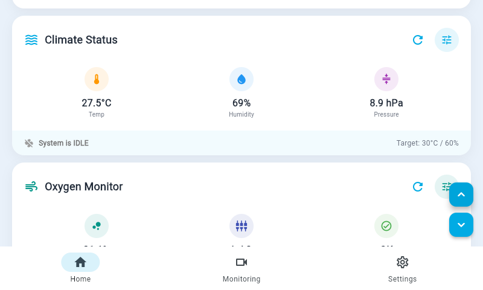

Climate & oxygen
Steady warmth, humidity and oxygen.
The clinician sets the air temperature, humidity and oxygen level, and the incubator keeps them there on its own: warming, humidifying and adding oxygen as needed, so the environment settles gently instead of swinging up and down.
- Clinician-setTargets are chosen and changed from any screen.
- Hands-offNo constant manual adjustment; control can be switched off at any time.
- RemembersSettings and alarm limits are kept through a power cut and restored when power returns.
